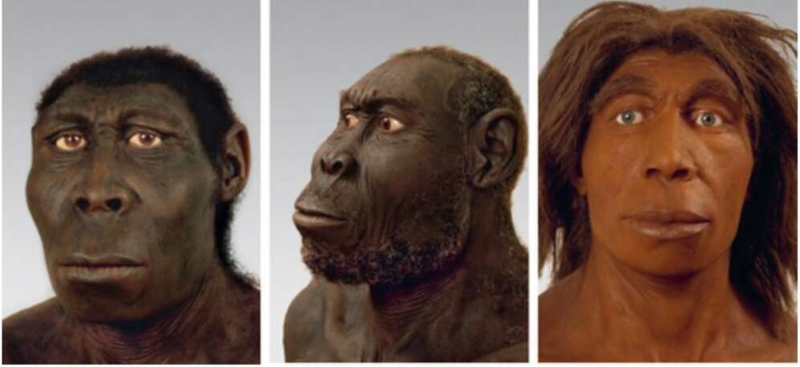

directions. The result was several distinct species, to each of which scientists have assigned a pompous Latin name. 2. Our siblings, according to speculative reconstructions (left to right): Homo rudolfensis (East Africa); Homo erectus (East Asia); and Homo neanderthalensis (Europe and western Asia). All are humans. Humans in Europe and western Asia evolved into Homo neanderthalensis (‘Man from the Neander Valley), popularly referred to simply as ‘Neanderthals’. Neanderthals, bulkier and more muscular than us Sapiens, were well adapted to the cold climate of Ice Age western Eurasia. The more eastern regions of Asia were populated by Homo erectus, ‘Upright Man’, who survived there for close to 2 million years, making it the most durable human species ever. This record is unlikely to be broken even by our own species. It is doubtful whether Homo sapiens will still be around a thousand years from now, so 2 million years is really out of our league. On the island of Java, in Indonesia, lived Homo soloensis, ‘Man from the Solo Valley’, who was suited to life in the tropics. On another Indonesian island — the small island of Flores -— archaic humans underwent a process of dwarfing. Humans first reached Flores when the sea level was exceptionally low, and the island was easily accessible from the mainland. When the seas rose again, some people were trapped on the island, which was poor in resources. Big people, who need a lot of food, died first. Smaller fellows survived much better. Over the
